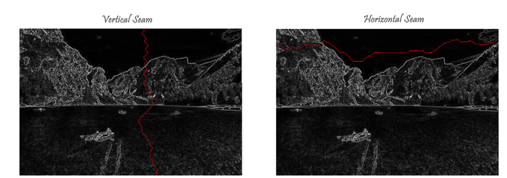

Above left is the original 500-by-333 pixel image; above right is the result after removing 250 vertical seams, resulting in a 50% narrower image. Unlike standard content-agnostic resizing techniques (such as cropping and scaling), seam carving preserves the most interest features (aspect ratio, set of objects present, etc.) of the image.
The following steps describe the process of seam carving.
The energy of each pixel is a measure of the importance of each pixel- the higher the energy, the less likely that the pixel will be included as part of a seam to remove. The energy is calculated by gradient magnitudes here. The energy is high (white) for pixels in the image where there is a rapid color gradient
A vertical (or) horizontal seam of minimum total energy is calculated via the dynamic programming approach similar to the classic shortest path problem in an edge-weighted digraph.The weight is the energy at each pixel. The purpose of this step is to find the shortest path from any of the W pixels in the top row (left column) to any of the W pixels in the bottom row (right column).
The final step is to remove from the image all of the pixels along the seam.